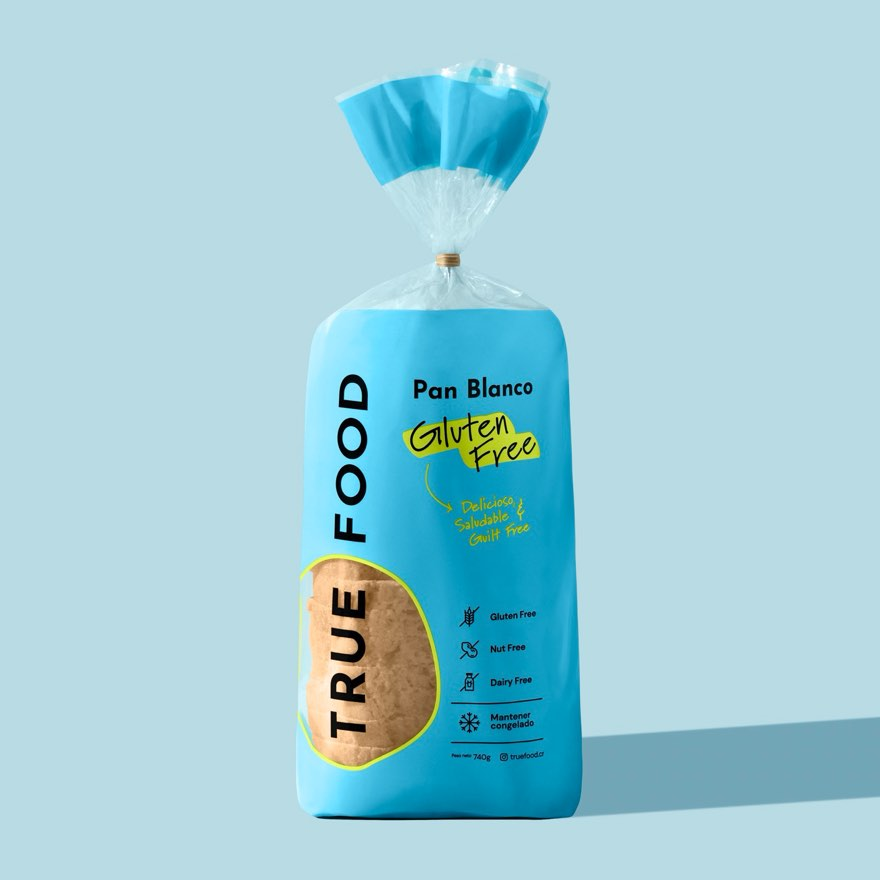
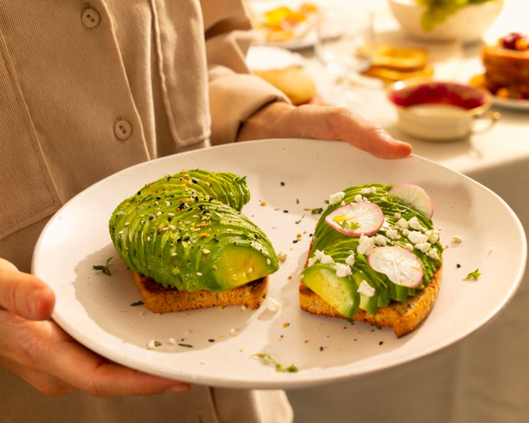
White Bread
Perfect for sandwiches.
- Sliced
- 740 g
- Frozen
Made with the best ingredients, naturally gluten free. In the supermarket freezer aisle.
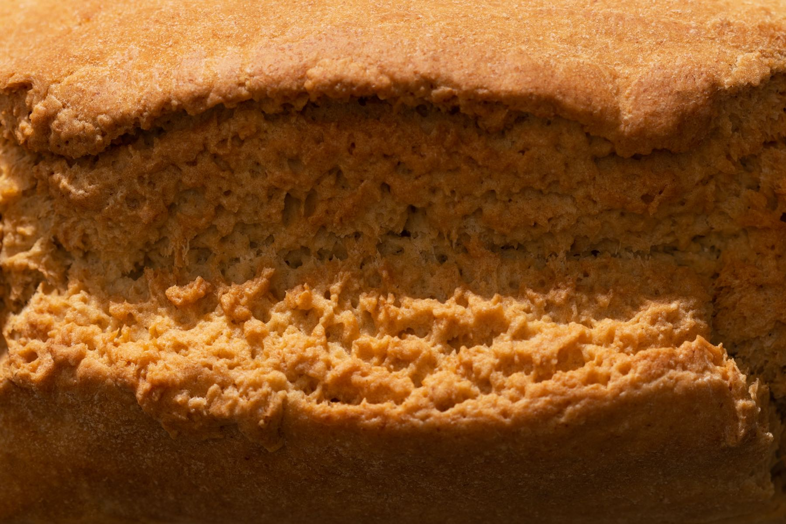
In that order. It has to taste good first. If it isn’t delicious, it isn’t True Food.
The products
Every one of them free of gluten, dairy and nuts. Each has its own colour on the shelf.


Perfect for sandwiches.


Vegan and nutritious, with sunflower, pumpkin and flax seeds.
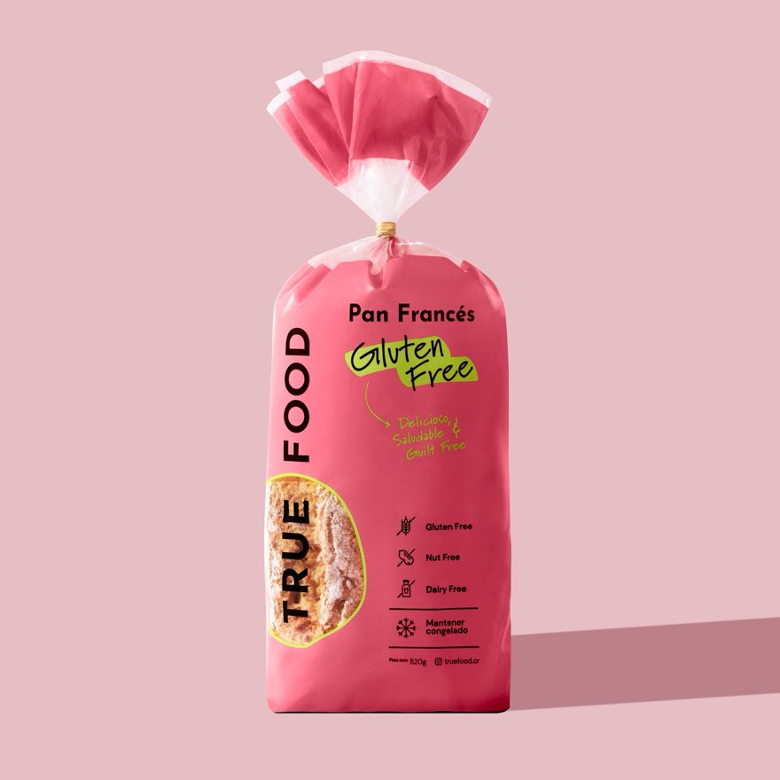
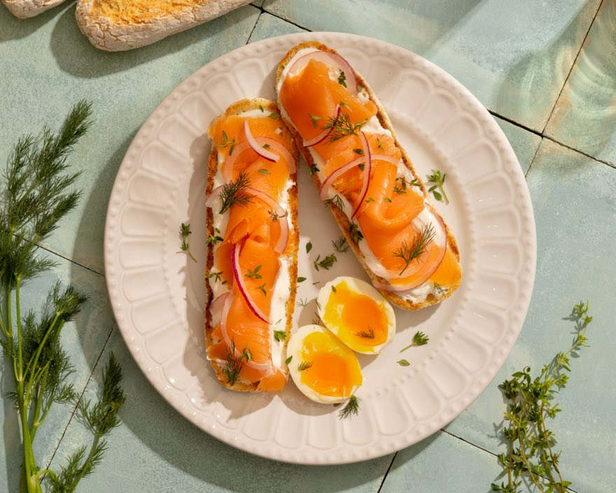
Versatile for hot dogs or toast.
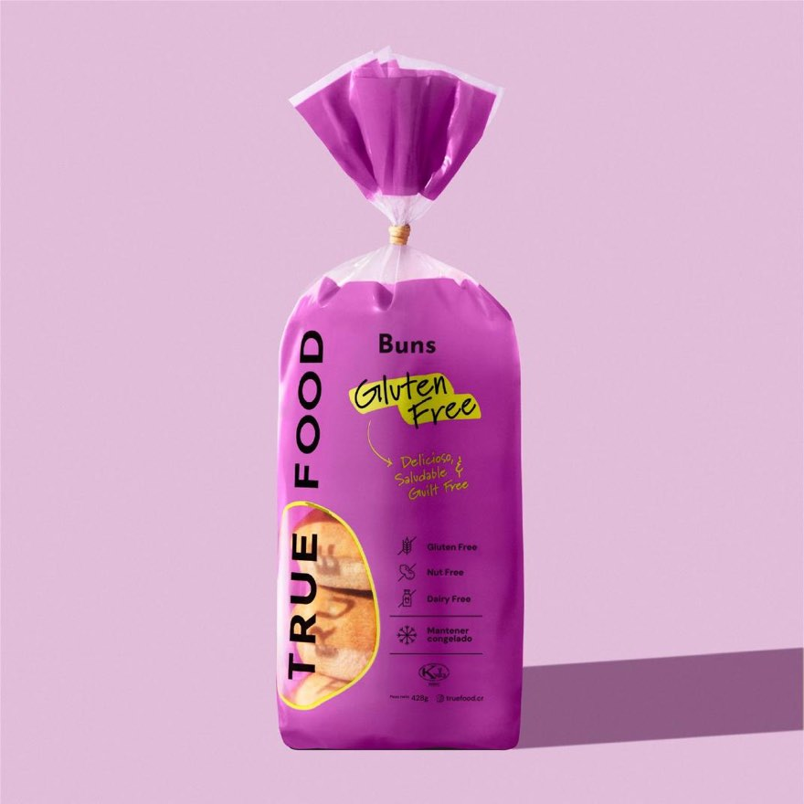
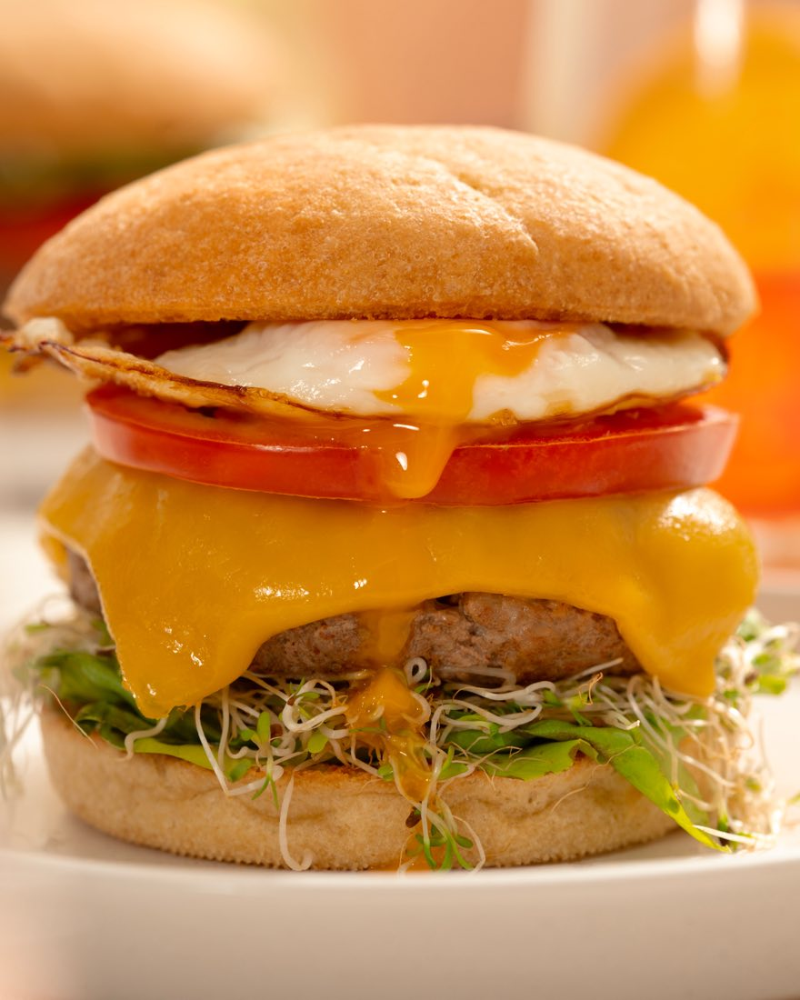
For burgers. They also work for French toast.
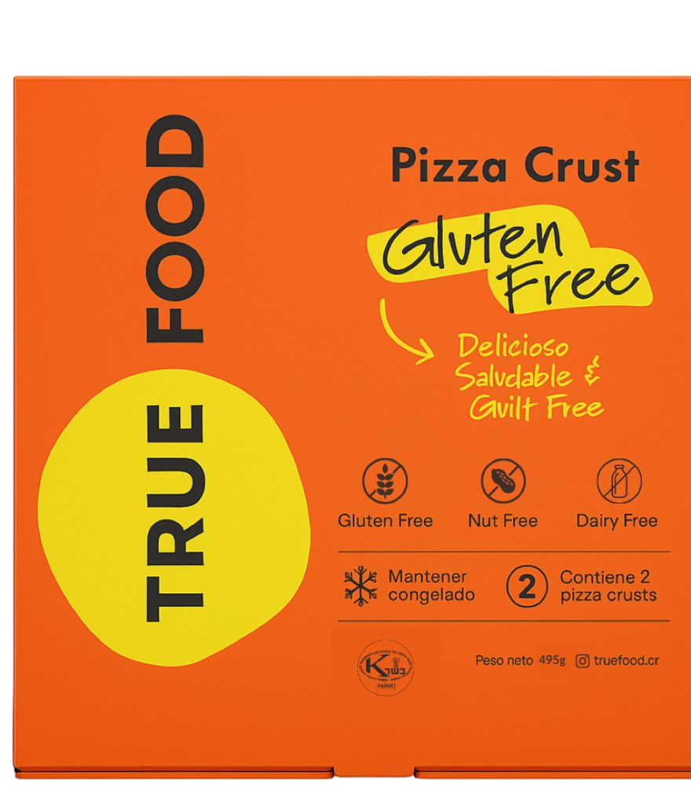
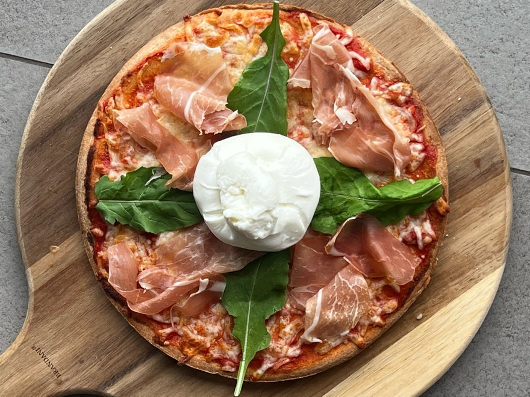
Ready-to-bake base.
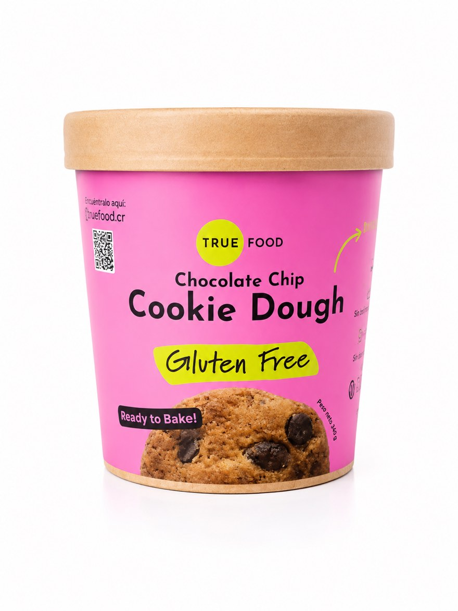
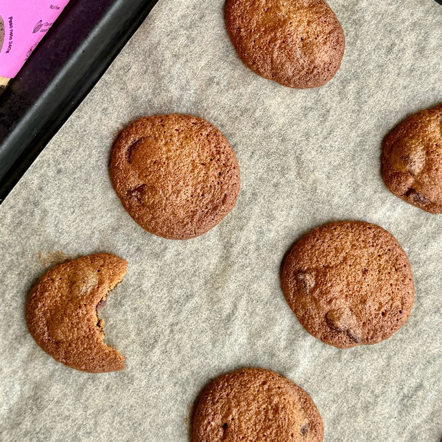
Frozen dough, ready to bake, with 70% dark chocolate.
Where to find us
Look for us in the freezer aisle. We also supply restaurants such as Franco, Simple, Negroni, Árbol de Seda, Chez Christophe and Momo Café.
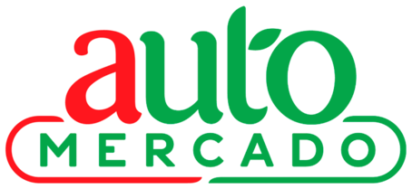
Retailer logos are the property of each chain and are shown solely to indicate where the product is sold.
Certifications
Monthly testing on surfaces and finished product. Full traceability for every batch.

Kosher Parve
Food safety
Ministry of Health

Who we are
True Food started with a mother. When Santiago, Andrea's youngest son, began showing food allergies and intolerances, she did what any mother would: she looked for answers. Along the way she found that the problem was not only what he ate, but how his body reacted to certain foods — gluten among them.
What started as a change at home ended up changing the family's life, and became a business that today helps hundreds of people. Together with her friend Lorena Madrid, Andrea built True Food to prove that a delicious, healthy, gluten-free life is possible.
“Because what's good is real, and what's real is good.”
Distribution & export
Made in our own plant in Costa Rica, with a health registration per product and batch-level traceability. These are the case specifications.
| Product | Pack format | Shelf life | Weight | Master case | Dimensions | Health registration |
|---|---|---|---|---|---|---|
| White Bread | Sliced | 6 months | 740 g | 6 units | 30 × 24 × 23 cm | RE-CR-22-09623 |
| Seeded Bread | Sliced | 6 months | 915 g | 6 units | 30 × 24 × 23 cm | RE-CR-22-08653 |
| French Bread | 4 units per pack | 6 months | 520 g | 6 packs · 24 units | 30 × 24 × 23 cm | RE-CR-22-09623 |
| Buns | 4 units per pack | 6 months | 428 g | 6 packs · 24 units | 30 × 24 × 23 cm | RE-CR-22-09623 |
| Pizza Crust | 2 units per pack | 6 months | 560 g | 6 packs · 12 units | 28 × 20 × 28 cm | RE-CR-24-07412 |
| Cookie Dough | Frozen dough | 6 months | 340 g | 12 units | 30 × 22 × 22 cm | A-CR-25-29437 |
BRC and NSF Gluten-Free audits completed — certification pending.
Direct contact
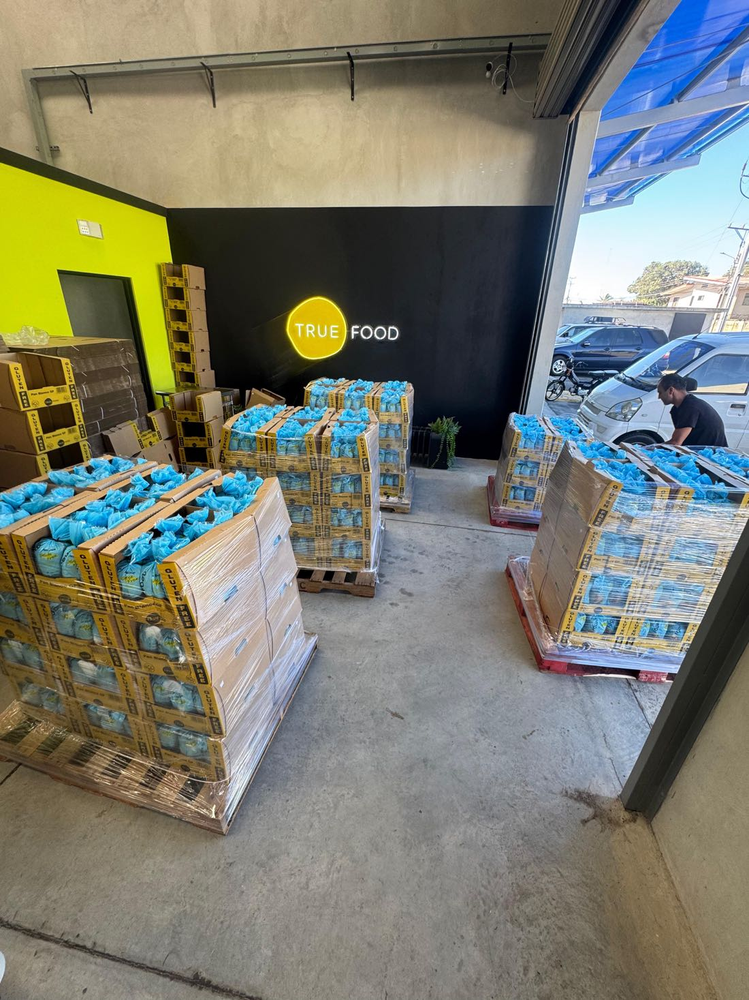